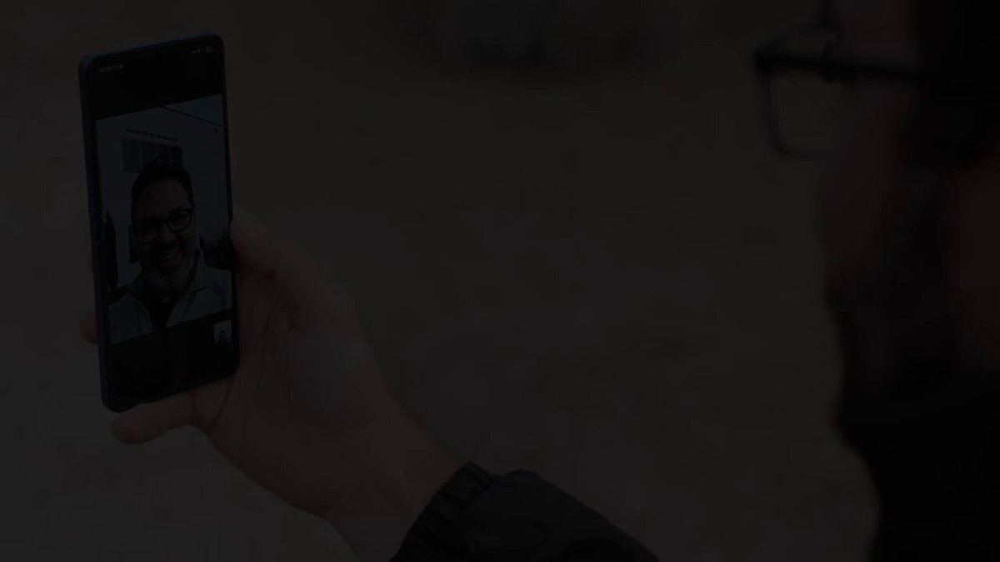

SpaceX · 7 Oct 2026
15,000 satellites that talk to a normal phone

SpaceX can now launch 15,000 satellites that connect straight to ordinary phones. The FCC approved the constellation on Tuesday. Every one of them will fly between 326 and 335 km up — below the International Space Station.
Today’s Starlink Mobile, sold in the US through the carriers, is the preview. Kazakhstan switched the same idea on for Beeline customers this week, free for now. The UK has had it since February; O2 wants £3 a month and it will do WhatsApp when the towers quit.
Direct-to-cell is the product that makes Starlink feel like a phone plan instead of a dish on a roof. The altitude is the tell: they are parking the new birds under the station on purpose.
I keep this next to the United clip — five live games in one exit row — because both stories are the same product escaping the hobbyist box. One is in the cabin. One is in your pocket when the map goes grey.